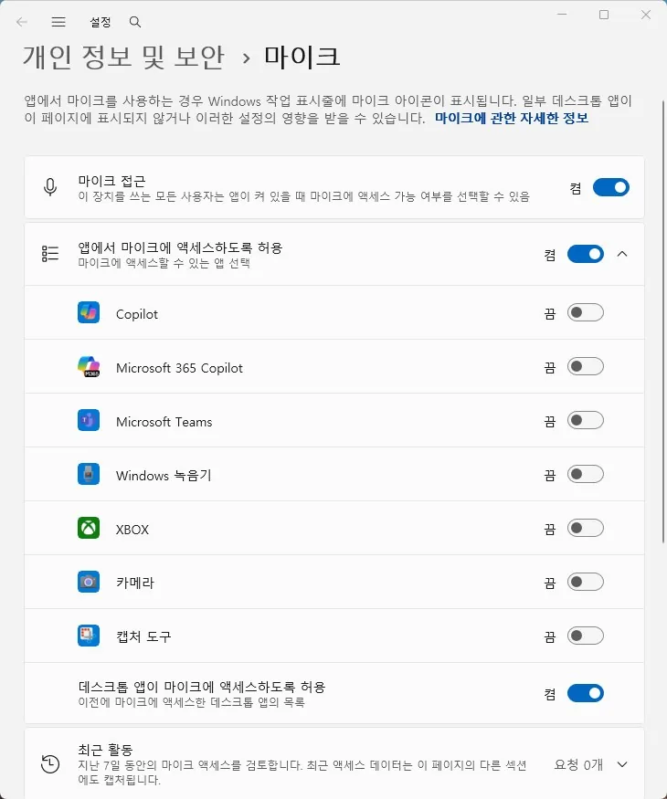

오디오
마이크 인식 안 됨 원인과 점검 순서
마이크가 인식되지 않거나 특정 프로그램에서만 입력이 안 되는 경우
마이크 인식 문제는 하드웨어 고장보다 Windows의 마이크 권한 설정이나 기본 장치 지정 문제인 경우가 훨씬 많습니다. 먼저 Windows 자체의 소리 설정에서 마이크 입력이 잡히는지부터 확인하는 것이 순서입니다.
Windows 설정에서는 마이크가 잡히는데 특정 게임이나 디스코드, 줌 같은 프로그램에서만 안 된다면, 그 프로그램 내부의 마이크 장치 선택이 실제 사용 중인 장치와 다르게 지정된 경우가 대부분입니다.
Windows 설정에서도 전혀 반응이 없다면 개인정보 보호 설정에서 마이크 접근이 앱에 허용되어 있는지, 또는 여러 대의 마이크(웹캠 내장 마이크, 헤드셋 마이크 등)가 동시에 연결되어 있어 다른 장치가 기본으로 지정된 것은 아닌지 확인해야 합니다.
이 가이드가 필요한 상황
- 마이크 아이콘에 빨간 사선이 표시되거나 음소거로 고정되어 있다.
- 설정의 입력 장치 테스트에서는 반응하는데 특정 프로그램에서만 안 된다.
- 다른 컴퓨터에 연결하면 정상 작동한다.
먼저 확인할 항목
- 마이크 접근 권한 확인 — 설정 > 개인정보 및 보안 > 마이크에서 '마이크 접근'과 사용 중인 앱의 권한이 켜져 있는지 확인하세요.

마이크 화면. 마이크 접근과 앱에서 마이크에 액세스하도록 허용이 켜져 있고, Teams·카메라 등 개별 앱별 권한 목록이 표시되어 있다" loading="lazy" width="730" height="875" class="guide-image"> - 기본 입력 장치 확인 — 설정 > 시스템 > 소리에서 입력 장치 목록을 확인하고 사용하려는 마이크를 기본 장치로 지정하세요.
- 시스템 레벨에서 입력 테스트 — 소리 설정의 입력 장치 테스트 막대가 말할 때 움직이는지 먼저 확인한 뒤, 안 되면 프로그램이 아니라 시스템·하드웨어 쪽을 봐야 합니다.
- 프로그램별 마이크 장치 설정 확인 — 디스코드는 설정 > 음성 및 비디오, 게임은 오디오 설정에서 입력 장치를 시스템 기본 마이크와 동일하게 지정하세요.
원인을 더 정확히 나누는 방법
Windows에서는 되는데 특정 프로그램에서만 안 될 때
이 경우는 하드웨어나 드라이버 문제가 아니라 프로그램 내부의 마이크 장치 지정 문제일 가능성이 매우 높습니다. 프로그램을 재설치하기보다 프로그램의 오디오 설정 메뉴에서 입력 장치를 다시 선택하세요.
여러 마이크 장치가 충돌하는 경우
웹캠 내장 마이크, 헤드셋 마이크, USB 마이크가 동시에 연결되어 있으면 Windows나 프로그램이 의도하지 않은 장치를 기본으로 선택할 수 있습니다. 사용하지 않는 장치는 설정에서 사용 안 함으로 비활성화해 혼선을 줄이세요.
확인 결과에 따른 다음 단계
- 시스템 테스트에서도 반응이 없을 때 — 권한·기본 장치 설정을 확인한 뒤에도 안 되면 드라이버를 재설치하고, 그래도 안 되면 다른 컴퓨터에 연결해 하드웨어 자체 고장인지 구분하세요.
- 특정 프로그램에서만 안 될 때 — 시스템은 정상이므로 해당 프로그램의 마이크 장치 설정만 다시 지정하면 대부분 해결됩니다.
피해야 할 실수
- 특정 프로그램에서만 안 되는데 드라이버부터 삭제하는 것
- 권한 설정 확인 없이 바로 새 마이크를 구매하는 것
자주 묻는 질문
- 마이크 접근 권한은 어디서 확인하나요? 설정 > 개인정보 및 보안 > 마이크에서 확인할 수 있습니다. '마이크 접근'이 꺼져 있으면 모든 앱에서 마이크를 사용할 수 없습니다.
- 노트북 내장 마이크만 안 되고 외장 마이크는 되면요? 내장 마이크 드라이버 문제일 가능성이 높습니다. 장치 관리자에서 내장 마이크를 제거한 뒤 재부팅해 재설치를 시도하세요.
- 게임 중에만 마이크가 끊기면요? 게임 내 오디오 설정에서 마이크 감도(노이즈 게이트)가 너무 높게 설정되어 있지 않은지 확인하세요.
최종 검토일: 2026-08-07